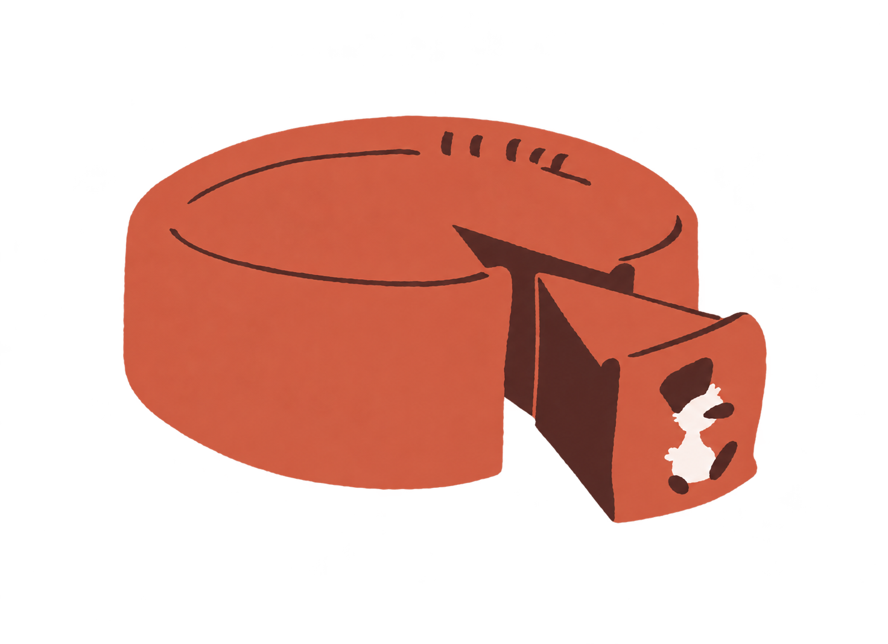

Un capricho hecho en casa
La tarta de queso que sabe a casa.
Cremosa, casera y con ese sabor que convierte cualquier día en uno especial.
Pequeños lotes, mucho mimo
y sabor de verdad.
y sabor de verdad.
Hecha
con amor♥
con amor♥

Cremosa por dentro.Inolvidable por fuera.
Nuestra especialidad
Pocas cosas.
Mucho sabor.
Una tarta de queso casera, cremosa y hecha para disfrutarla sin prisas. Así de sencillo. Así de buena.
Pide la tuya
01
Recién hecha
Preparada en casa, en pequeños lotes y con todo el mimo.
02
Para compartir
20 × 20 × 6 cm, con 8–10 porciones para juntar a los tuyos.
03
De Tarragona
Un proyecto local con sabor casero y mucho corazón.
De nuestra cocina a tu mesa
No hace falta
una ocasión especial.
La merienda del domingo, un cumpleaños o ese martes que pide algo rico. Nuestra tarta está hecha para los momentos que saben mejor juntos.
Compartimos unaEl siguiente paso es tuyo
¿Te apetece
una?
Escríbenos por mensaje privado para consultar disponibilidad y hacer tu pedido.
Pedir por mensaje privado Con cariño, desde Tarragona.